Team: Music Band | Group: SE-2501
Kanatov Sabyrzhan and Zhaxylyk Alikhan
Objective: Continue the Cold Carti fan website with jQuery search, feedback and loading interactions.
Console message: "jQuery is ready!"
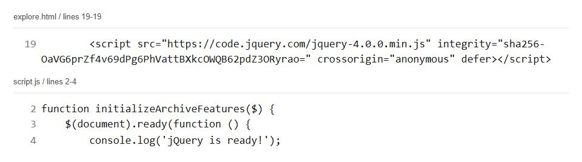
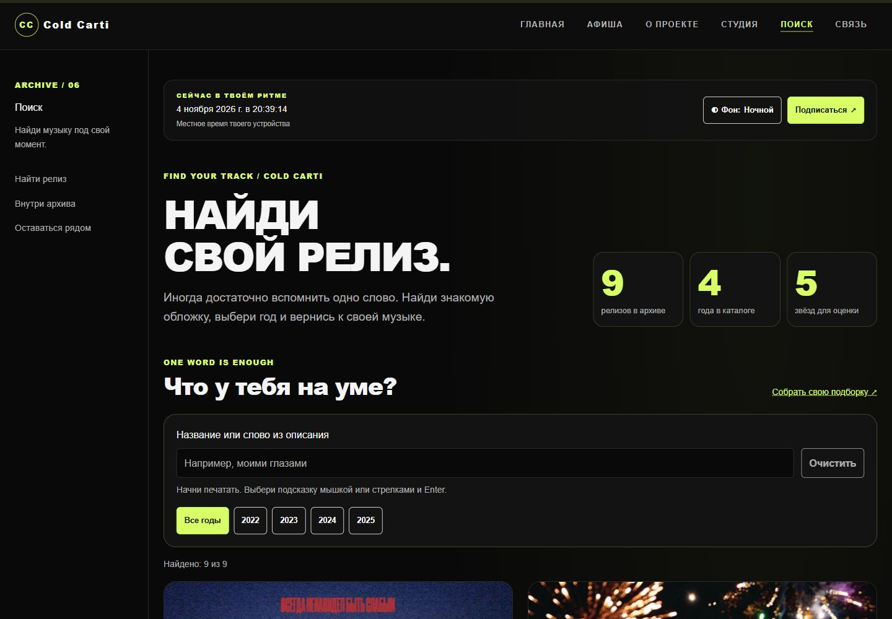
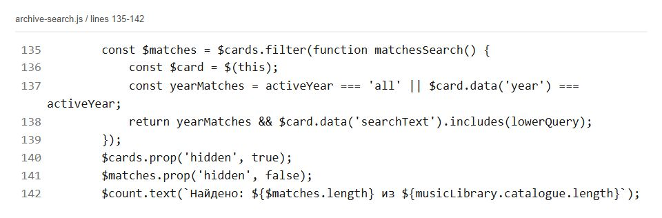
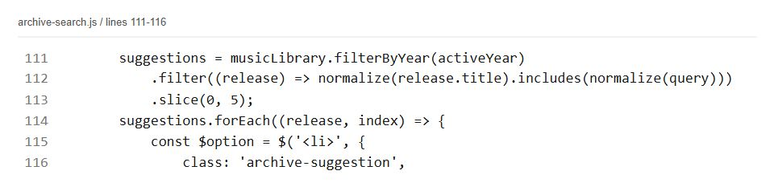
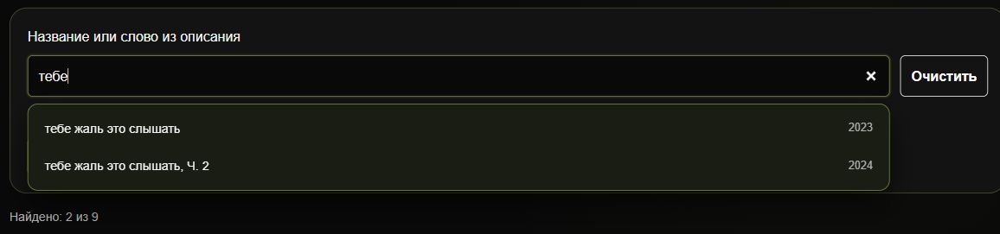
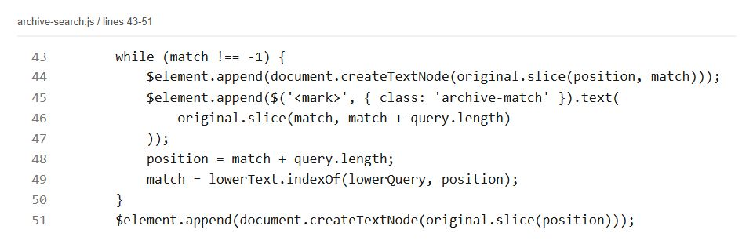
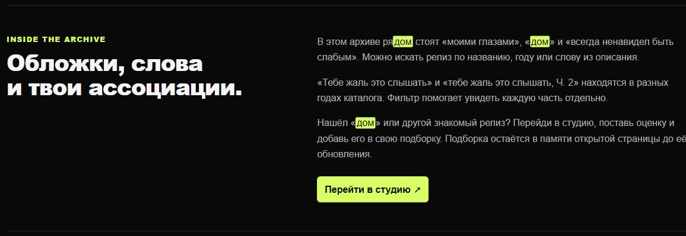
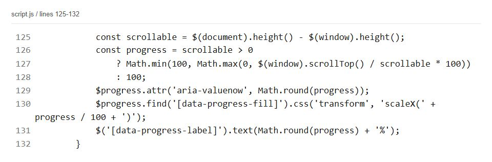
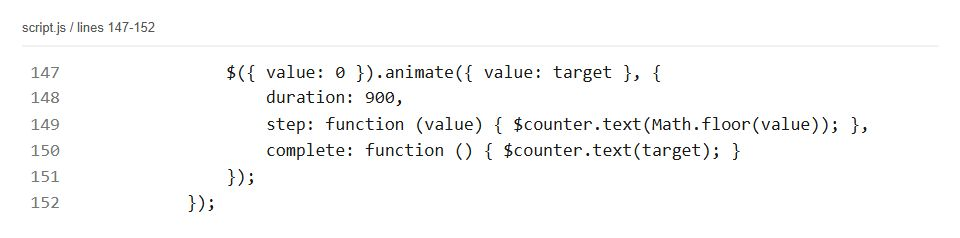
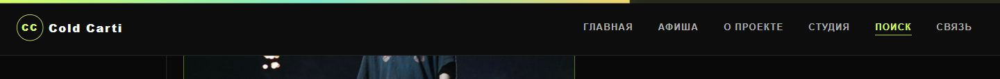
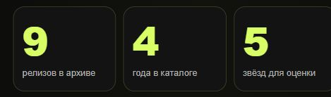
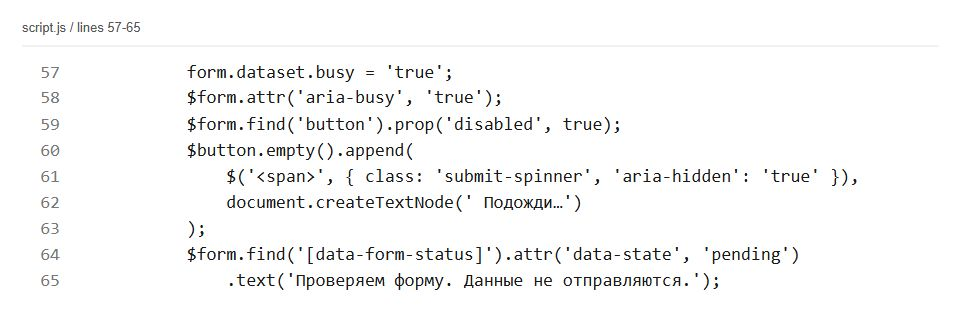
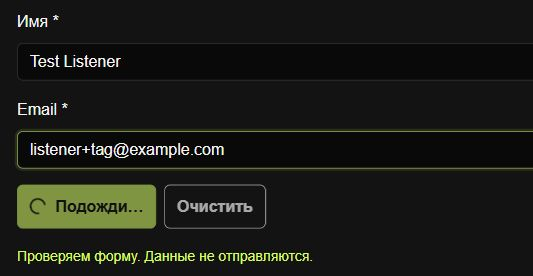
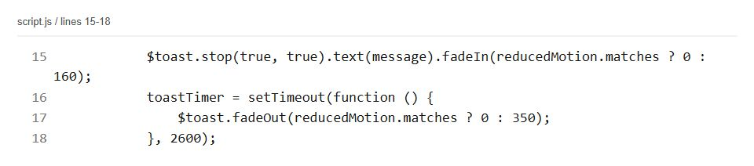
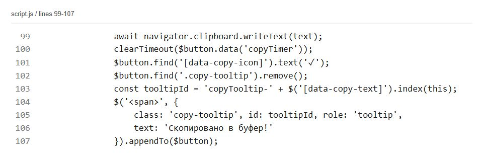
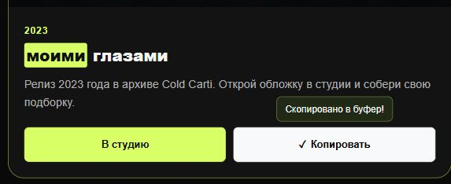
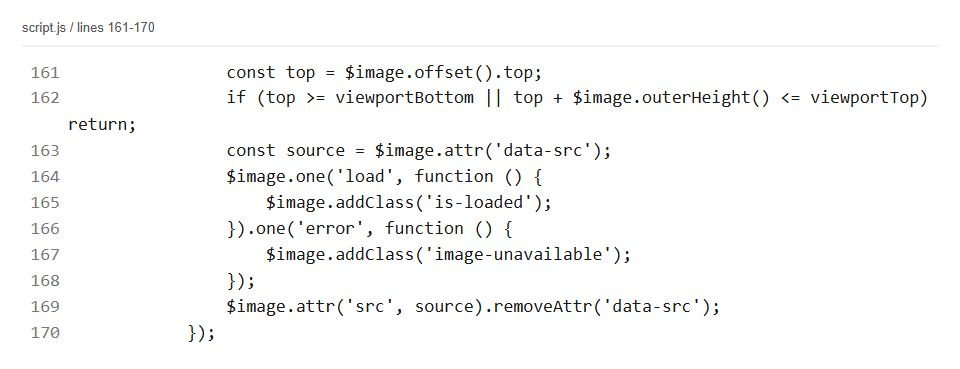
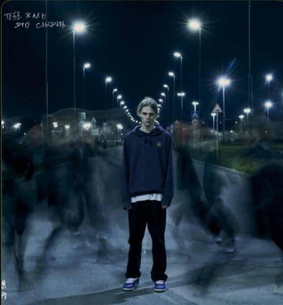
Search text can contain HTML or pattern symbols. Build highlights from text nodes instead of treating the query as markup.
A form can change during the simulated delay. Cancel its timer and restore the original buttons when the user edits it.
Filtering moves cards on the page. Recheck image visibility and scroll progress after the results change.
jQuery connects the existing catalogue to search and feedback with short DOM methods. Data and validation remain shared. Forms simulate a check without sending or saving data.
https://kanatovs.github.io/music-bandv3/explore.html
Project: https://github.com/kanatovs/music-bandv3
Prepared on 4 November 2026.